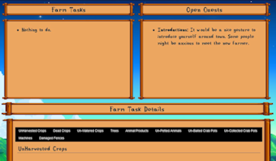
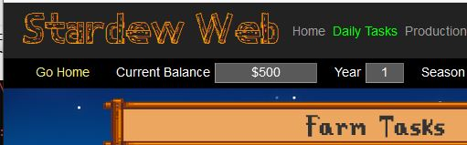
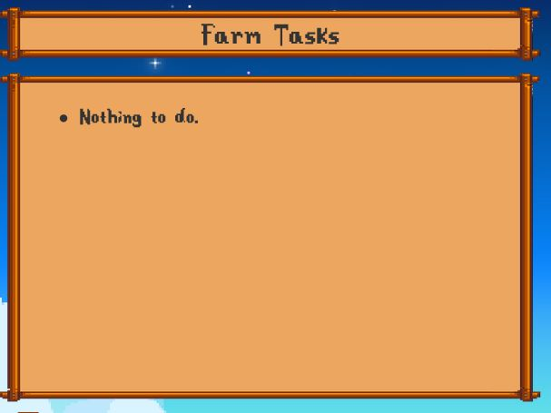
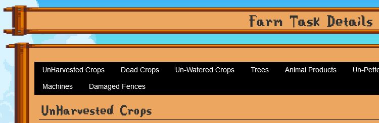

Overview

This information is collected using an updated fork of the mod
Daily Tasks Rperot. The mod has been enhanced to add the following functionality:
- Compatibilty with Stardew Valley 1.5
- Added farm task checking to Ginger Island
- Added checking for damaged fences.
- Added checking for Ponds wanting something
- Added checking for Ponds with Product
- Added the ability to ignore Flowers in the Ready to Harvest Report
- Added the ability to be notified on the 28th that Flowers are ready to harvest.
Provides a list of farm related tasks thatare required to be done today. It shows:
- If The Queen of Sauce has a new recipe for you
- If it's someone's birthday
- If traveling merchant is in town
- Unwatered crops (in the farm, ginger island and greenhouse)
- Crops ready to harvest (in the farm, ginger island and greenhouse)
- Dead crops
- If you did not pet your pet
- If you did not fill your pet's bowl
- Animals that were not petted
- Animals products ready to collect
- Empty hay spots on feedings benches
- If there are fruits/mushrooms to be collected in your farm cave.
- Crab pots ready to be collected
- Crab pots that were not baited
- Machines ready to collect (full list of machines in the configuration section)
- Damaged fences that need repair.
The report is fully configurable to select which ofthe following are reported:
- NewRecipe On Tv: Shows if The Queen Of Sauce has a new recipe for you
- Birthdays: Show if it's someone's birthday
- Traveling Merchant: Show if the traveling merchant is in town
- Unwatered Crops: Adds unwatered crops to the report
-
Unharvested Crops: Adds crops ready to harvest to the report
- Can be configured to ignore flowers in the report
- Flowers can be reported in the 28th of the month report
- Dead Crops: Adds dead crops to the report
- Fruit Trees: Reports fruits in trees starting from this number (0 to disable)
- Unpetted Pet: Adds if you did not pet your pet (cat/dog)
- Unfilled Pet Bowl: Adds if you did not fill your pet's bowl
- Unpetted Animals: Adds farm animals that were not petted
-
Animal Products: Adds the selected animal products below ready to collect the report:
- Cow milk
- Goat milk
- Sheep wool
- Chicken egg
- Dinosaur egg
- Duck egg
- Ostrich egg
- Duck feather
- Rabbit's wool
- Rabbit's foot
- Truffle
- Slime ball
- Missing Hay: Adds unfilled hay spots on the animal houses to the report
- Farm Cave: Adds mushrooms/fruits in your farm cave that are ready to collect
- Uncollected Crabpots: Adds uncollected Crabpots to the report
- Not Baited Crabpots: Adds Crabpots that were not baited
-
Machines: Adds the selected machines that are ready to collect to the report:
- Bee House
- Charcoal Kiln
- Cheese Press
- Crystalarium
- Furnace
- Keg
- Lightning Rod
- Loom
- Mayonnaise Machine
- Oil Maker
- Preserves Jar
- Recycling Machine
- Seed Maker
- Slime Egg-Press
- Soda Machine
- Statue Of Endless Fortune
- Statue Of Perfection
- Tapper
- Worm Bin
- Cask: report when product is equal or above quality (0: disabled, 1: silver, 2: gold, 3 or 4: iridium)
- Broken Fences: Adds the location of broken fences to the report.
- Ponds Wanting Something Notifies you of any ponds that have requirements to grow their population.
- Ponds With Collectables Notifies you of any ponds that have items that can be collected.
Configuring
Configuration is done in the
Mod Config View. In there all configruation options are availbe for customization. The changes take effect immedialty.

Using
Select the "
Daily Tasks" tab, after the game has loaded, to get today's list of tasks.

The top left message board will list a summary of the task for today. What is reported will be based upon your choices in the configration view.
If you enabled the opion 'Show Detailed Info', the tabbed box at the bottom of the view will
each item in the report and the location of that item.

If you have warping enabled, click on the location points beside the work item will warp you to that item.
The code is still under development, so when it warps you to the item, it warps you to the item exactly. This can lead to some
fun locations. Remember clicking the 'Go Home' button, if enabled, is your friend when wapring gets you stuck.
Advanced
If you want to change the machines and/or the products that are available, you can edit the config.json file in this mod's directory to amke your own customizations.
Any changes to the values in "Machines" list or the "AnimalProducts" list will be shown in the configruation view.
Return to the Index
{kind=link}